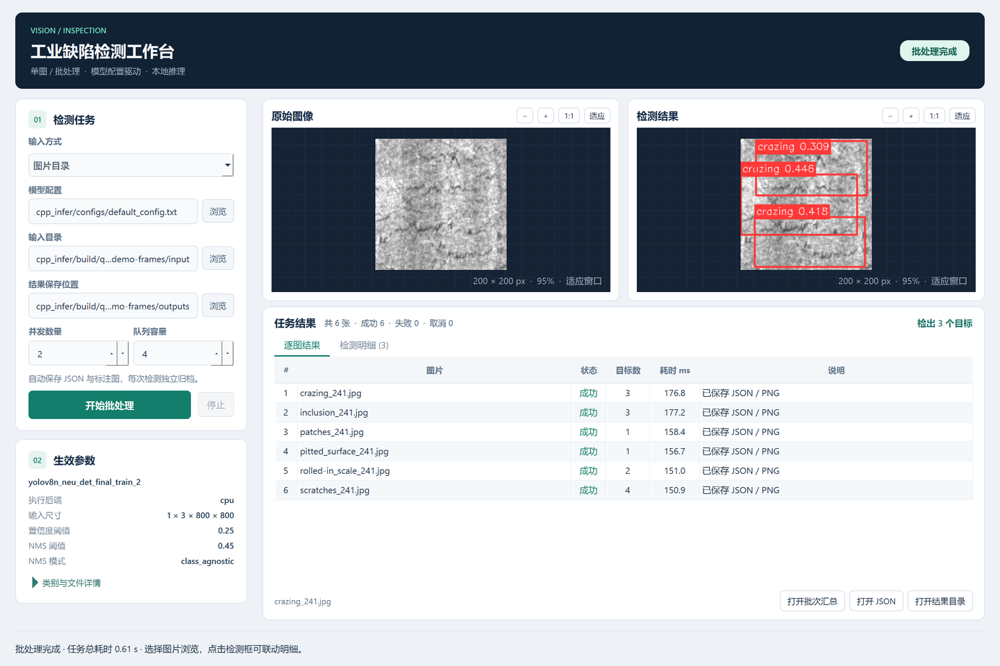
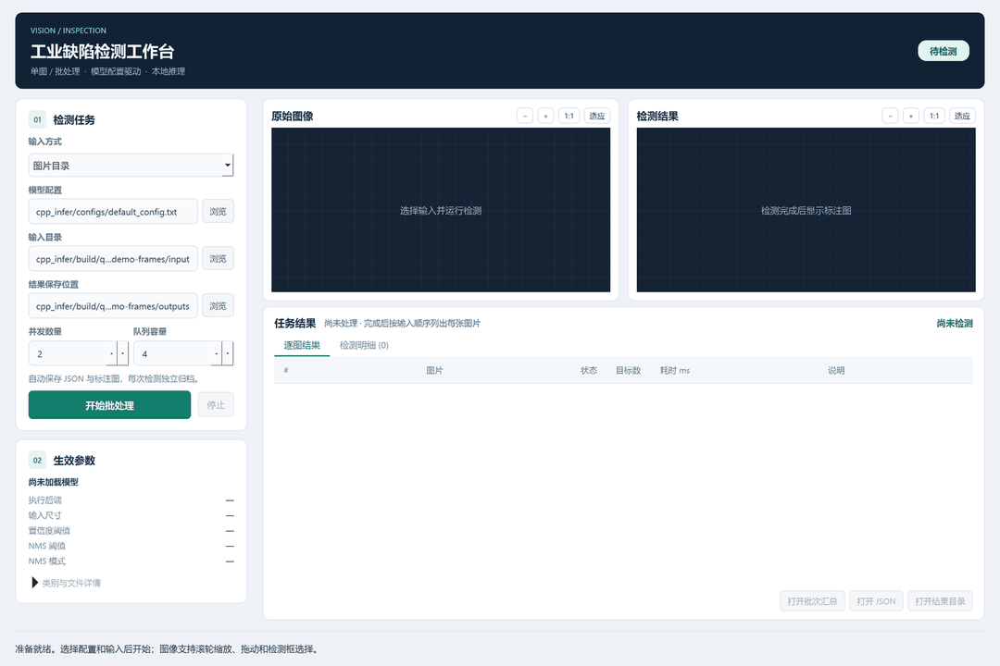
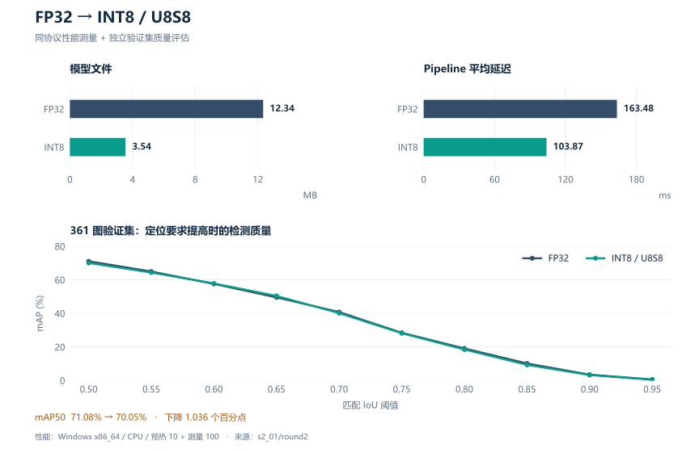
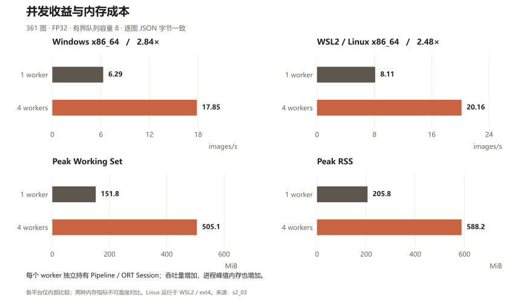

01 / APPLICATION
让检测可操作
单图、批量、协作停止、缩放与结果浏览，形成完整桌面流程。
将工业表面缺陷检测串成完整链路：桌面交互、配置与模型契约、FP32 / INT8 推理、有界批处理、结果校验，以及 Windows、Linux 与 AArch64 的功能验证。

单图、批量、协作停止、缩放与结果浏览，形成完整桌面流程。
CLI 与 Qt 共用配置、模型契约、pipeline、session 和结果协议。
用独立 benchmark、profiling 和质量报告说明收益与代价。
Windows / Linux 实测，AArch64 交叉构建与 QEMU 功能验证。
从配置输入到批次完成，再切换图片、放大检查检测框。点击任一步骤停留查看，或播放完整动图。

Qt 是 Runtime 的应用适配层。模型切换、预处理、后处理、批处理调度和结果写出沿用既有工程，实现一次、验证多处。
project_core 保持轻量；Runtime 承接视觉推理依赖；Qt Widgets 仅在独立、可选的应用 target 中启用。
RuntimeConfig 定义运行参数，ModelArtifactSpec 声明模型、类别及 I/O 语义。FP32 与 INT8 通过配置切换，外部 I/O 均保持 float32。
BatchRunner 使用有界队列，每个 worker 独占 pipeline / session。按输入顺序收集结果，损坏单图不会阻断其他任务，停止请求允许在途任务完成。
GUI 线程负责控件与交互，后台调用既有 Runtime。表格 Model、图像绘制、QSS 与布局集中在 Qt 模块，调整主题不改变推理协议。
下列图表由仓库已有实验报告生成。量化对比与并发对比分别保留各自的输入、环境和计时口径，点击数据来源可以回到原始记录。
Windows x86_64 · C++ Release · ORT 1.19.2 CPU · 单会话线程 1/1 · 固定单图，预热 10 次、测量 100 次（2026-08-27）

FP32 · 361 图 · queue capacity 8 · JSON 输出 · 每 worker 独立 Pipeline / Session · ORT 线程 1/1（2026-08-30）

运行环境、依赖和工具链通过 CMake、工具链文件与脚本组织。矩阵记录已完成的 Runtime 功能验证；Qt 桌面交付目前验证 Windows x64。
| 平台与环境 | 单图 | 目录 / Manifest | FP32 / INT8 | 有界并发 | 验证说明 |
|---|---|---|---|---|---|
| Windows x86_64原生 Windows · MSVC 19.50 · OpenCV 4.8.0 | ✓ | ✓ | ✓ | ✓ | 原生 CPU 验证；Qt 客户端的当前交付平台。 |
| WSL2 / Linux x86_64WSL2 Ubuntu 24.04 · GCC 13.3 · OpenCV 4.6.0 · ext4 | ✓ | ✓ | ✓ | ✓ | Linux Runtime / CLI 验证，含目录与 manifest 一致性。 |
| Linux AArch64 / QEMUx86_64 主机交叉编译 · GCC 13 · QEMU 用户态 | ✓ | ✓ | ✓ | ✓ | 仅证明功能可移植；不提供 ARM 实机速度、内存或功耗结论。 |
FP32 与正式 U8S8 复用 RuntimeConfig → DetectorPipeline → BatchRunner；AArch64 通过交叉编译和 QEMU 用户态验证构建、加载及功能。
演示包收集 Qt、OpenCV、ORT 运行依赖、模型配置及样例，运行时无需安装开发套件、编译器或 Python。
准备 MSVC x64、Qt 6 Widgets MSVC 套件、OpenCV 和 ORT C++ SDK，并填写本地配置。 查看依赖与构建说明
Copy-Item cpp_infer/tools/stage1.local.example.psd1 cpp_infer/.stage1.local.psd1
Copy-Item cpp_infer/tools/qt.local.example.psd1 cpp_infer/.qt.local.psd1
# 编辑两份本地配置中的 SDK 路径
.\cpp_infer\tools\qt.cmd build
.\cpp_infer\tools\qt.cmd run
.\cpp_infer\tools\qt.cmd packagepackage 默认生成 dist/yolo-defect-qt/。使用自行构建的目录，或作者交付的完整演示包。
yolo-defect-qt/
├─ run.cmd 启动工作台
├─ verify.ps1 清洁环境检查
├─ yolo_defect_qt.exe Qt Widgets
├─ yolo_defect_cpp.exe C++ CLI
├─ *.dll / platforms/ … 随包运行依赖
├─ configs/ + artifacts/ 运行配置 / 模型声明
├─ models/ FP32 / INT8
├─ samples/ 六类样例 / manifest
├─ outputs/ 每次任务独立归档
├─ demo/ index.html / index.en.html
├─ assets/ qt/ + engineering/
└─ licenses/ 组件许可材料UI、Runtime 与交付包各有清晰入口；可视化展示对应具体实现与验收。
| 范围 | 验证内容 | 入口 |
|---|---|---|
| Qt 与 CLI | FP32 / U8S8、目录 / manifest 的检测结果与顺序一致；停止重启、关闭收尾、选择与缩放。 | qt.cmd test -Screenshots |
| Runtime / CLI | 独立构建与回归，核心逻辑、配置、模型契约、批处理及结果写出。 | stage1.cmd test / stage1.sh test |
| 性能与剖析 | 独立 CPU session，阶段计时、P50 / P95、吞吐量与 ORT 算子分析。 | stage1.cmd benchmark / profile |
| 演示包 | 限制 PATH，检查包内运行依赖、真实检测与 Qt 启动。 | powershell -NoProfile -ExecutionPolicy Bypass -File .\verify.ps1 |
单图 benchmark 排除 warmup，batch 吞吐量按成功图片数 / processing wall time 计算。GUI 任务总耗时包含准备与写出；QEMU 记录功能结果，原生 ARM 性能需在实际设备上测量。
README 与两版网页共用媒体资源。页面由一个结构模板和成对文案生成，图表由证据数据生成，让截图、交互步骤与双语介绍保持一致。
.\cpp_infer\tools\qt.cmd media
python cpp_infer/tools/render_demo.py --check
.\cpp_infer\tools\qt.cmd package -PackageDir dist/yolo-defect-qt-newqt_demo_capture.cpp 驱动真实 Qt 控件与推理；qt_demo_media.py 生成 PNG、WebP 和 GIF，需安装 requirements-qt-media.txt 中的 Pillow。精选素材位于 docs/assets/qt/，临时帧保留在构建目录。修改颜色、字体、图标或布局后重新运行 media 即可；若控件名称或流程变化，同时更新捕获脚本。
页面结构与样式只编辑 docs/demo/page.template.html；中英文文案成对维护在 content.json。render_demo.py 同时生成 index.html 与 index.en.html，--check 检查两种语言的字段、步骤数量和输出是否同步。生成后的 HTML 可直接离线打开，无需服务器。
仅在实验报告更新时运行下面两条命令。demo_charts.py 读取已提交报告，生成 evidence.json 与 docs/assets/engineering/ 图表，需安装 requirements-demo-charts.txt 中的 Matplotlib。新实验完成后更新来源再生成；不要手工修改图中的数值，模型大小、延迟与质量评估指标保留各自定义。
python cpp_infer/tools/demo_charts.py
python cpp_infer/tools/render_demo.py可用 OBS 的窗口捕获录制连续操作，或用 ScreenToGif 录制短 GIF。按本页成功流程操作，保留检测完成和结果切换，裁掉无关桌面。
将视频保存为 docs/assets/qt/walkthrough.mp4，再在共享模板中添加 video controls 元素，以 workbench.png 作为封面。两版网页一并生成；Pages 和打包入口支持复制 MP4，README 可用封面链接。
将展示文件和 .github/workflows/qt-demo-pages.yml 提交到仓库默认分支。在仓库 Settings → Pages 将 Source 设为 GitHub Actions，再到 Actions 选择 Qt demo Pages，点击 Run workflow。发布成功后使用工作流给出的 Pages 地址。
中文页面地址为 /yolo_defect/demo/，英文为 /yolo_defect/demo/index.en.html。后续更新素材和双语页面后重新执行同一工作流。离线移动时一并保留 demo/ 与 assets/，相对路径即可正常加载。
开发环境使用匹配 x64 的 Qt / MSVC / OpenCV / ORT SDK。演示包收集运行依赖，整体移动目录即可。运行 verify.ps1 检查包是否完整；若检测失败，先查看界面错误信息与结果 JSON。
默认模型与样例的获取、可选 INT8 生成、配置相对路径和 I/O 契约在 C++ 技术手册统一维护。更换模型时检查输入形状、类别与输出语义；公开分发时保留随包许可材料。 打开 Runtime 技术手册